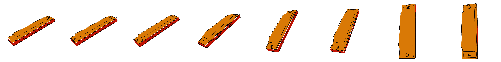

Harmonica

In pop culture

But before we start, how does a harmonica work?


A lot of parts...
Tap the pieces to see their names
chromatic


diatonic


tremolo



1900
toots
a belgian legend


"Het is niet gemakkelijk om met mij samen te leven want ik denk dat ik soms te obsessed ben door mijn mondharmonica."


Chromatic

Toots Thielemans was lid van de circa 25 leden tellende Snorrenclub Antwerpen. Hij werd in 1988 door hen tot "Snor van het Jaar" uitgeroepen.

Sesame street
Midnightcowboy
Bluesette